Frentes de obras rodoviárias · Goiás
Registros de campo
Fotografias e vídeos reais de frentes de obras rodoviárias da GOINFRA em Goiás. Rodovia, data, hora e coordenadas foram transcritas dos carimbos gravados em cada registro.
- Fotografias
- 40
- Vídeos
- 4
- Rodovias
- GO-330 · GO-338 · GO-460
- Período
- out/2025 – jul/2026
Fotografias
40 registros
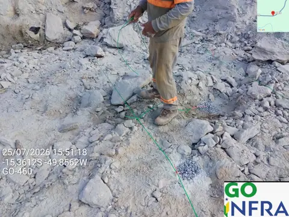
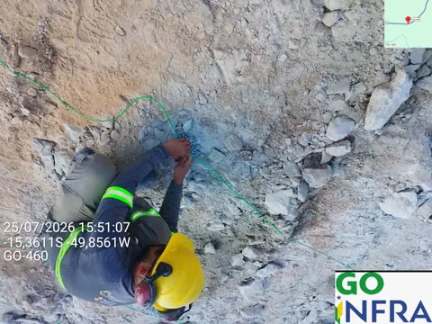
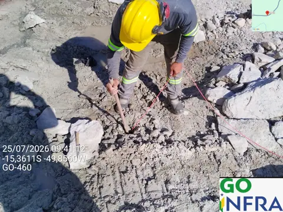
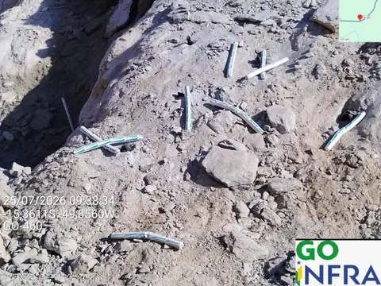
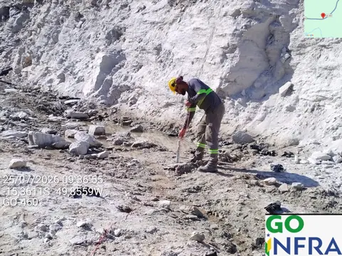
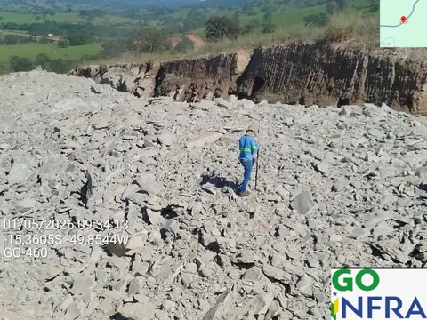
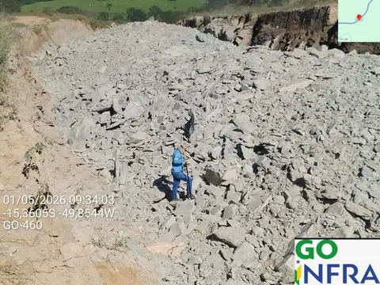
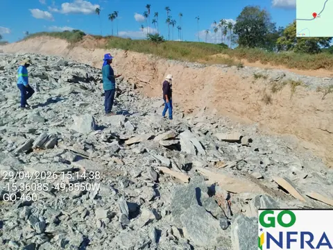
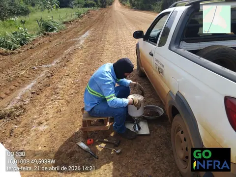
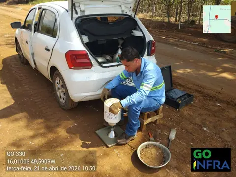
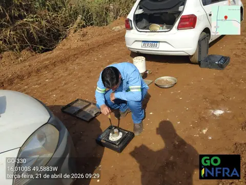
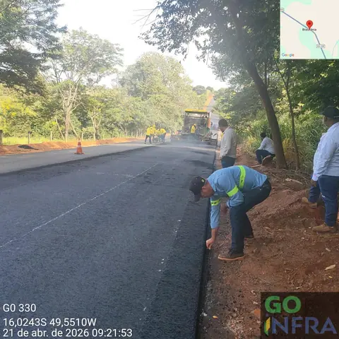
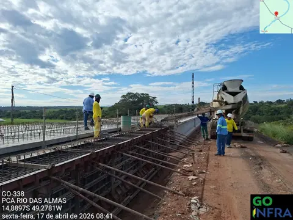
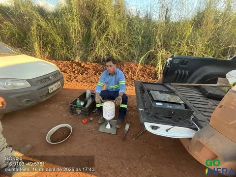
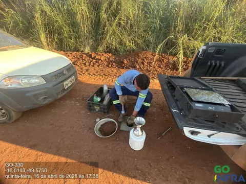
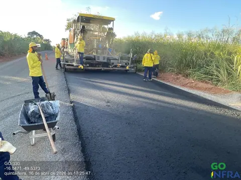
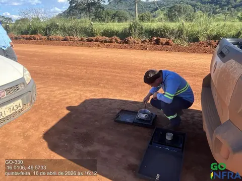
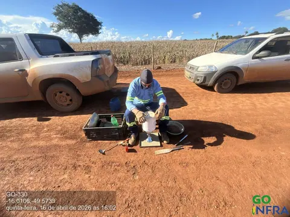
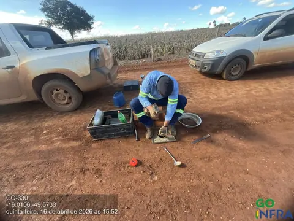
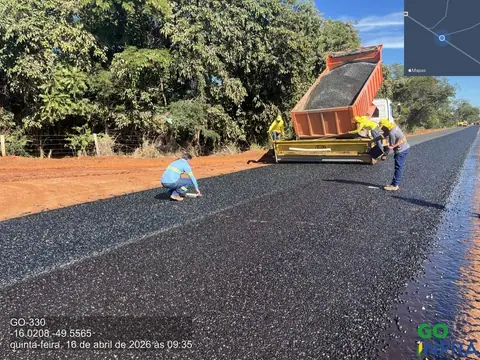
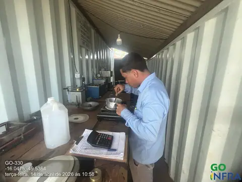
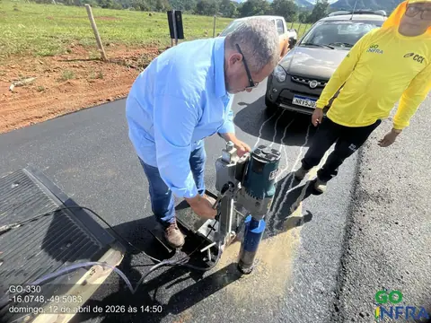
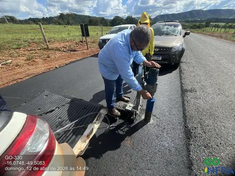
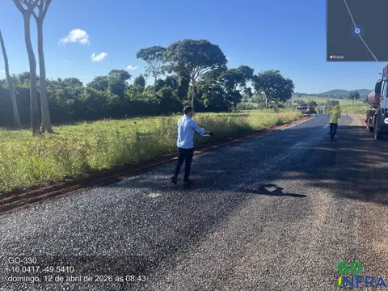
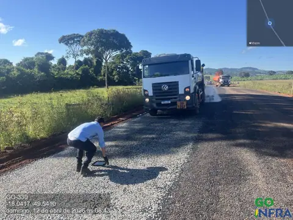
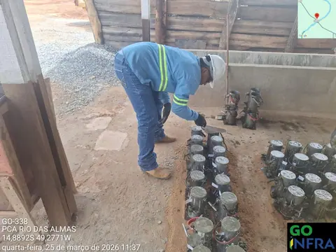
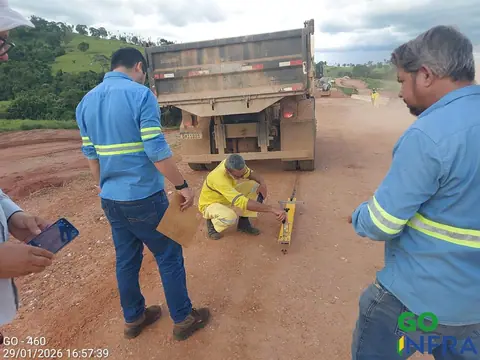
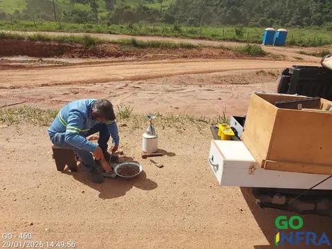
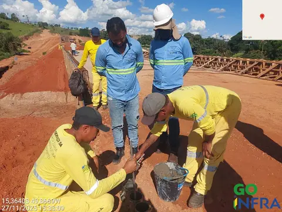
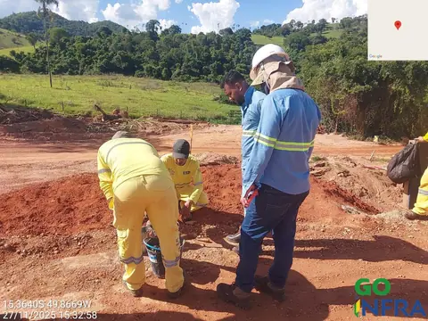
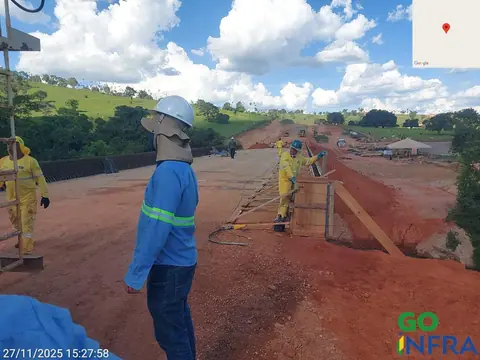
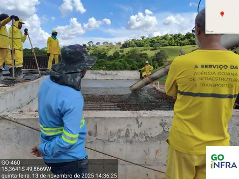
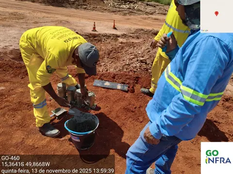
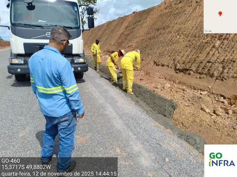
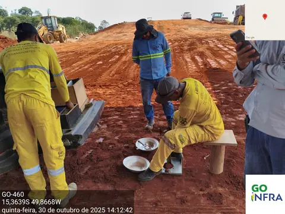
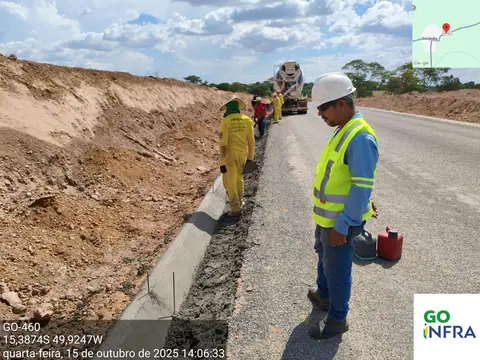
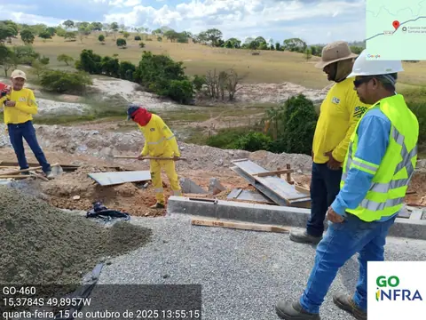
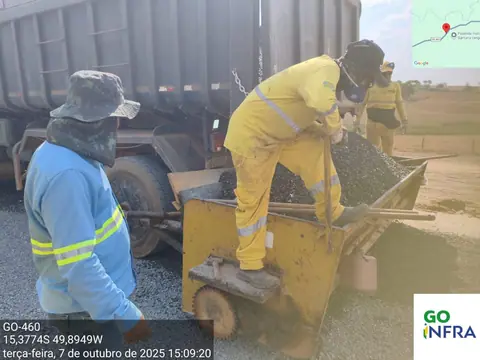
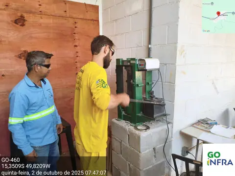
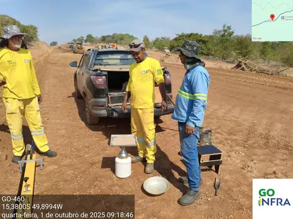
Vídeos de campo
Corte em rocha
Perfuração, desmonte de rocha a fogo e frente de corte após o desmonte. Trechos dos vídeos originais de campo, recortados e comprimidos para a web, sem áudio.